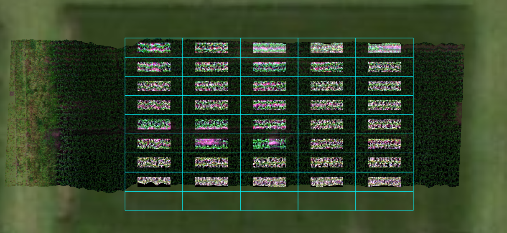
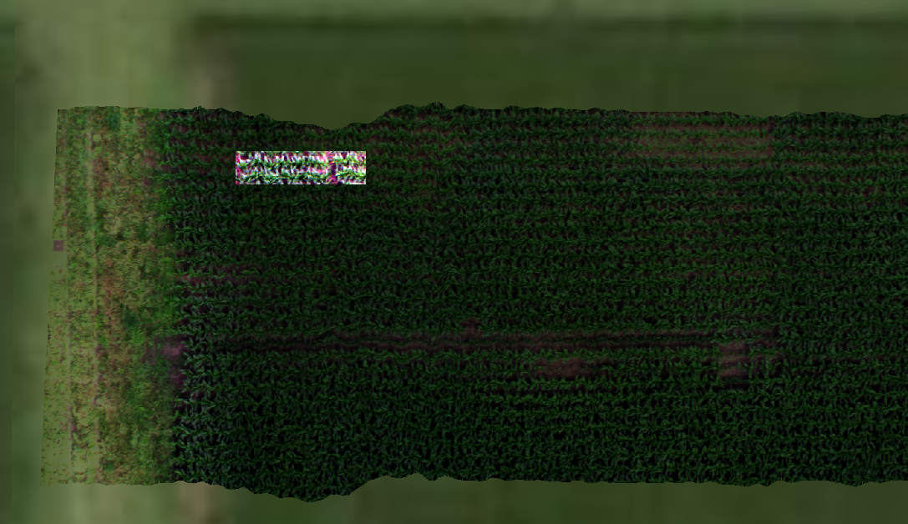

8.1.6. spatial_mod¶
-
class
hs_process.spatial_mod(spyfile, gdf=None)[source]¶ Bases:
objectClass for manipulating data within the spatial domain (e.g., cropping a datacube by a geographical boundary).
Methods Summary
crop_many_gdf([spyfile, gdf, plot_id_ref, ...])Crops many plots from a single image by comparing the image to a
crop_single([pix_e_ul, pix_n_ul, ...])Crops a single plot from an image.
load_spyfile(spyfile)Loads a
SpyFile(Spectral Python object) for data access and/or manipulation by thehstoolsclass.Methods Documentation
-
crop_many_gdf(spyfile=None, gdf=None, plot_id_ref=None, pix_e_ul=None, pix_n_ul=None, n_plots=None)[source]¶ Crops many plots from a single image by comparing the image to a polygon file (
geopandas.GoeDataFrame) that contains plot information and geometry of plot boundaries.- Parameters:
- spyfile (
SpyFileobject, optional): The datacube to crop; if None, loads datacube and band information fromspatial_mod.spyfile(default:None).- gdf (
geopandas.GeoDataFrame, optional): the plot IDs and polygon geometery of each of the plots; 'plot' must be used as a column name to identify each of the plots, and should be an integer; if
None, loads geodataframe fromspatial_mod.gdf(default:None).- plot_id_ref (
int, optional): the plot ID of the reference plot. plot_id_refis required if passingpix_e_ul,pix_n_ul, orn_plotsbecause it is used as the reference point for any of the adjustments/modifications dictated by said parameters.plot_id_refmust be present in thegdf, and the extent ofplot_id_refmust intersect the extent of the datacube (default:None).- pix_e_ul (
int, optional): upper left pixel column (easting) of plot_id_ref; this is used to calculate the offset between the GeoDataFrame geometry and the approximate image georeference error (default:None).- pix_n_ul (
int, optional): upper left pixel row (northing) of plot_id_ref; this is used to calculate the offset between the GeoDataFrame geometry and the approximate image georeference error (default:None).- n_plots (
int, optional): number of plots to crop, starting with plot_id_refand moving from West to East and North to South. This can be used to limit the number of cropped plots (default;None).
- spyfile (
- Returns:
pandas.DataFrame:df_plots (
pandas.DataFrame) -- data for which to crop each plot; includes 'plot_id', 'pix_e_ul', and 'pix_n_ul' columns. This data can be passed tospatial_mod.crop_singleto perform the actual cropping.
- Note:
If
pix_e_ulorpix_n_ulare passed, the pixel offset from the northwest corner ofplot_id_refwill be calculated. This offset is then applied to all plots within the extent of the image to systematically shift the actual upper left pixel locations for each plot, effectively shifting the easting and/or northing of the upper left pixel of the hyperspectral datacube to match that of thegdf. If the shift should only apply to a select number of plots,n_plotscan be passed to restrict the number of plots that are processed.- Note:
Either the pixel coordinate or the map unit coordinate should be passed for
crop_X_Yandbuf_X_Yin each direction (i.e., easting and northing). Do not pass both.- Example:
Load the
hsioandspatial_modmodules>>> import geopandas as gpd >>> import os >>> from hs_process import hsio >>> from hs_process import spatial_mod
Read datacube and spatial plot boundaries
>>> fname_in = r'F:\nigo0024\Documents\hs_process_demo\Wells_rep2_20180628_16h56m_pika_gige_7-Radiance Conversion-Georectify Airborne Datacube-Convert Radiance Cube to Reflectance from Measured Reference Spectrum.bip.hdr' >>> fname_gdf = r'F:\nigo0024\Documents\hs_process_demo\plot_bounds_small\plot_bounds.shp' >>> gdf = gpd.read_file(fname_gdf) >>> io = hsio(fname_in) >>> my_spatial_mod = spatial_mod(io.spyfile) >>> dir_out = os.path.join(io.base_dir, 'spatial_mod', 'crop_many_gdf') >>> name_append = '-crop-many-gdf'
Get instructions on how plots should be cropped via
spatial_mod.crop_many_gdf(); note that apandas.DataFrameis returned with information describing how each plot should be cropped.>>> df_plots = my_spatial_mod.crop_many_gdf(spyfile=io.spyfile, gdf=gdf) >>> df_plots plot_id pix_e_ul pix_n_ul crop_e_pix crop_n_pix 0 1018 478 0 229 76 1 918 707 0 229 76 2 818 936 0 229 76 3 718 1165 0 229 76 4 618 1394 0 229 76 5 1017 478 76 229 76 6 917 707 76 229 76 7 817 936 76 229 76 8 717 1165 76 229 76 9 617 1394 76 229 76 ...
Use the data from the first frow of df_plots to crop a single plot from the original image (uses spatial_mod.crop_single)
>>> pix_e_ul=113 >>> pix_n_ul=0 >>> crop_e_pix=229 >>> crop_n_pix=75 >>> plot_id=1018 >>> array_crop, metadata = my_spatial_mod.crop_single( pix_e_ul=pix_e_ul, pix_n_ul=pix_n_ul, crop_e_pix=crop_e_pix, crop_n_pix=crop_n_pix, spyfile=io.spyfile, plot_id=plot_id)
Save the cropped datacube and geotiff to a new directory
>>> fname_out = os.path.join(dir_out, io.name_short + '_plot_' + str(1018) + name_append + '.' + io.defaults.envi_write.interleave) >>> fname_out_tif = os.path.join(dir_out, io.name_short + '_plot_' + str(1018) + '.tif') >>> io.write_cube(fname_out, array_crop, metadata=metadata) >>> io.write_tif(fname_out_tif, spyfile=array_crop, metadata=metadata) Saving F:
- igo0024Documentshs_process_demospatial_modcrop_many_gdfWells_rep2_20180628_16h56m_pika_gige_7_plot_1018-crop-many-gdf.bip
Either projection_out is None or geotransform_out is None (or both are). Retrieving projection and geotransform information by loading hsio.fname_in via GDAL. Be sure this is appropriate for the data you are trying to write.
Using a for loop, use
spatial_mod.crop_singleandhsio.write_cubeto crop by plot and save cropped datacubes to file>>> for idx, row in df_plots.iterrows(): >>> io.read_cube(fname_in, name_long=io.name_long, name_plot=row['plot_id'], name_short=io.name_short) >>> my_spatial_mod.load_spyfile(io.spyfile) >>> array_crop, metadata = my_spatial_mod.crop_single( pix_e_ul=row['pix_e_ul'], pix_n_ul=row['pix_n_ul'], crop_e_pix=row['crop_e_pix'], crop_n_pix=row['crop_n_pix'], buf_e_m=2.0, buf_n_m=0.75, plot_id=row['plot_id']) >>> fname_out = os.path.join(dir_out, io.name_short + '_plot_' + str(row['plot_id']) + name_append + '.bip.hdr') >>> fname_out_tif = os.path.join(dir_out, io.name_short + '_plot_' + str(row['plot_id']) + '.tif') >>> io.write_cube(fname_out, array_crop, metadata=metadata, force=True) # force=True to overwrite the plot_1018 image >>> io.write_tif(fname_out_tif, spyfile=array_crop, metadata=metadata) Saving F:\nigo0024\Documents\hs_process_demo\crop_many_gdf\Wells_rep2_20180628_16h56m_pika_gige_7_plot_1018.bip Saving F:\nigo0024\Documents\hs_process_demo\crop_many_gdf\Wells_rep2_20180628_16h56m_pika_gige_7_plot_918.bip Saving F:\nigo0024\Documents\hs_process_demo\crop_many_gdf\Wells_rep2_20180628_16h56m_pika_gige_7_plot_818.bip Saving F:\nigo0024\Documents\hs_process_demo\crop_many_gdf\Wells_rep2_20180628_16h56m_pika_gige_7_plot_718.bip Saving F:\nigo0024\Documents\hs_process_demo\crop_many_gdf\Wells_rep2_20180628_16h56m_pika_gige_7_plot_618.bip Saving F:\nigo0024\Documents\hs_process_demo\crop_many_gdf\Wells_rep2_20180628_16h56m_pika_gige_7_plot_1017.bip Saving F:\nigo0024\Documents\hs_process_demo\crop_many_gdf\Wells_rep2_20180628_16h56m_pika_gige_7_plot_917.bip Saving F:\nigo0024\Documents\hs_process_demo\crop_many_gdf\Wells_rep2_20180628_16h56m_pika_gige_7_plot_817.bip Saving F:\nigo0024\Documents\hs_process_demo\crop_many_gdf\Wells_rep2_20180628_16h56m_pika_gige_7_plot_717.bip Saving F:\nigo0024\Documents\hs_process_demo\crop_many_gdf\Wells_rep2_20180628_16h56m_pika_gige_7_plot_617.bip ...
Open cropped geotiff images in QGIS to visualize the extent of the cropped images compared to the original datacube and the plot boundaries (the full extent image is darkened and displayed in the background:

-
crop_single(pix_e_ul=0, pix_n_ul=0, crop_e_pix=None, crop_n_pix=None, crop_e_m=None, crop_n_m=None, buf_e_pix=None, buf_n_pix=None, buf_e_m=None, buf_n_m=None, spyfile=None, plot_id=None, gdf=None, name_append='spatial-crop-single')[source]¶ Crops a single plot from an image. If
plot_idandgdfare explicitly passed (i.e., they will not be loaded fromspatial_modclass), the "map info" tag in the metadata will be adjusted to center the cropped area within the appropriate plot geometry.- Parameters
pix_e_ul (
int, optional) -- upper left pixel column (easting) to begin cropping (default: 0).pix_n_ul (
int, optional) -- upper left pixel row (northing) to begin cropping (default: 0).crop_e_m (
float, optional) -- length of each row (easting direction) of the cropped image in map units (e.g., meters; default:None).crop_n_m (
float, optional) -- length of each column (northing direction) of the cropped image in map units (e.g., meters; default:None)crop_e_pix (
int, optional) -- number of pixels in each row in the cropped image (default:None).crop_n_pix (
int, optional) -- number of pixels in each column in the cropped image (default:None).buf_e_m (
float, optional) -- The buffer distance in the easting direction (in map units; e.g., meters) to be applied after calculating the original crop area; the buffer is considered aftercrop_X_m/crop_X_pix. A positive value will reduce the size ofcrop_X_m/crop_X_pix, and a negative value will increase it (default:None).buf_n_m (
float, optional) -- The buffer distance in the northing direction (in map units; e.g., meters) to be applied after calculating the original crop area; the buffer is considered aftercrop_X_m/crop_X_pix. A positive value will reduce the size ofcrop_X_m/crop_X_pix, and a negative value will increase it (default:None).buf_e_pix (
int, optional) -- The buffer distance in the easting direction (in pixel units) to be applied after calculating the original crop area (default:None).buf_n_pix (
int, optional) -- The buffer distance in the northing direction (in pixel units) to be applied after calculating the original crop area (default:None).spyfile (
SpyFileobject ornumpy.ndarray) -- The datacube to crop; ifnumpy.ndarrayorNone, loads band information fromself.spyfile(default:None).plot_id (
int) -- the plot ID of the area to be cropped (default:None).gdf (
geopandas.GeoDataFrame) -- the plot names and polygon geometery of each of the plots; 'plot' must be used as a column name to identify each of the plots, and should be an integer.gdfmust be explicitly passed toname_append (
str) -- NOT YET SUPPORTED; name to append to the filename (default: 'spatial-crop-single').
- Returns
2-element
tuplecontainingarray_crop (
numpy.ndarray): Cropped datacube.metadata (
dict): Modified metadata describing the cropped hyperspectral datacube (array_crop).
Example
Load and initialize the
hsioandspatial_modmodules>>> from hs_process import hsio >>> from hs_process import spatial_mod >>> fname_in = r'F:\nigo0024\Documents\hs_process_demo\Wells_rep2_20180628_16h56m_pika_gige_7-Radiance Conversion-Georectify Airborne Datacube-Convert Radiance Cube to Reflectance from Measured Reference Spectrum.bip.hdr' >>> io = hsio(fname_in) >>> my_spatial_mod = spatial_mod(io.spyfile)
Crop an area with a width (easting) 200 pixels and a height (northing) of 50 pixels, with a northwest/upper left origin at the 342nd column (easting) and 75th row (northing).
>>> pix_e_ul = 342 >>> pix_n_ul = 75 >>> array_crop, metadata = my_spatial_mod.crop_single( pix_e_ul, pix_n_ul, crop_e_pix=200, crop_n_pix=50)
Save as a geotiff using
io.write_tif, then load into QGIS to visualize.>>> fname_tif = r'F:\nigo0024\Documents\hs_process_demo\spatial_mod\crop_single\crop_single.tif' >>> io.write_tif(fname_tif, array_crop, metadata=metadata) Either `projection_out` is `None` or `geotransform_out` is `None` (or both are). Retrieving projection and geotransform information by loading `hsio.fname_in` via GDAL. Be sure this is appropriate for the data you are trying to write.
Open cropped geotiff image in QGIS to visualize the extent of the cropped image compared to the original datacube and the plot boundaries (the full extent image is darkened and displayed in the background):

-
load_spyfile(spyfile)[source]¶ Loads a
SpyFile(Spectral Python object) for data access and/or manipulation by thehstoolsclass.- Parameters
spyfile (
SpyFileobject) -- The datacube being accessed and/or manipulated.
Example
Load and initialize the
hsioandspatial_modmodules>>> from hs_process import hsio >>> from hs_process import spatial_mod >>> fname_in = r'F:\nigo0024\Documents\hs_process_demo\Wells_rep2_20180628_16h56m_pika_gige_7-Radiance Conversion-Georectify Airborne Datacube-Convert Radiance Cube to Reflectance from Measured Reference Spectrum.bip.hdr' >>> io = hsio(fname_in) >>> my_spatial_mod = spatial_mod(io.spyfile)
Load datacube using
spatial_mod.load_spyfile>>> my_spatial_mod.load_spyfile(io.spyfile) >>> my_spatial_mod.spyfile Data Source: 'F:\nigo0024\Documents\hs_process_demo\Wells_rep2_20180628_16h56m_pika_gige_7-Radiance Conversion-Georectify Airborne Datacube-Convert Radiance Cube to Reflectance from Measured Reference Spectrum.bip' # Rows: 617 # Samples: 1300 # Bands: 240 Interleave: BIP Quantization: 32 bits Data format: float32
-